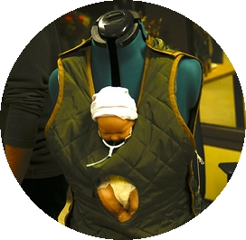
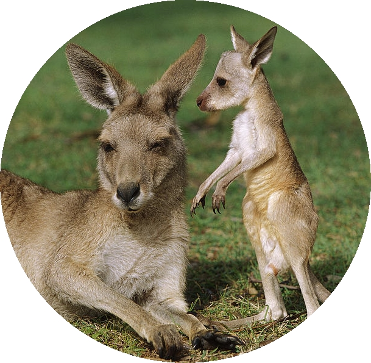

<div class="container header" id="index-header">
{% include nav.html %}
{% include header.html %}
</div>
<div class="row transition">
  <div class="large-6 columns">
	  
    <h2>We created a way to save 15 million lives</h2>
  </div>
  <div class="large-6 columns">
	  
    <h2>By strengthening the bond between mother and child</h2>
	</div>
</div>

</div>
<div class="container" id="body">
  <div class="row" id="description">
    <div class="small-6 small-centered columns">
			<h2 class="byline"><span class="emphasize">F</span>ollow our journey across the world</h2>
		</div>
	</div>
</div>
<div id="index-footer">
  {% include footer.html %}
</div>
<script>
if (screen.width > 480) {
$(window ).scroll(function(){
  var fade_opac = $(window).scrollTop() / ($('#index-header').height() - 300);
  $('#index-header').css({'background': 'linear-gradient(rgba(56,159,217,' + fade_opac + '),rgba(56,159,217,' + fade_opac + ')), url(assets/css/images/kangaroo-joey-in-pouch.jpg)', 'background-repeat':'no-repeat','background-size':'cover'});
 
  var current_scroll = $('#body').offset().top - $(window).scrollTop();
  if (current_scroll < 700 ) 
    var fadein_opac = 1.5 - (Math.pow($(window).scrollTop(),4)) / (Math.pow(($('#body').offset().top - 150),4) );

	else
    var fadein_opac = fade_opac		
  $('#body').css({'background': 'linear-gradient(rgba(56,159,217,' + fadein_opac + '),rgba(56,159,217,' + fadein_opac + ')), url(assets/css/images/ppl-thailand.jpg)', 'background-repeat':'no-repeat','background-size':'cover'});
  $('#description h2').css({'color': 'rgba(255, 255, 255,' + (1-fadein_opac) + ')'});
});
}
</script>